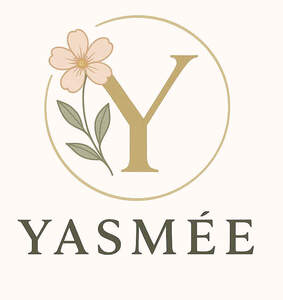

Trade Mark Journal No.2025/027 4 July 2025
UK00004223341 23 June 2025 (3)

- Class 3
- Creams (Cosmetic -); Cosmetic creams; Cosmetics and cosmetic preparations; Sunscreens [for cosmetic use]; Cosmetic moisturisers; Cosmetic soaps; Sunscreen [for cosmetic use]; Cosmetic facial lotions; Facial lotions [cosmetic]; Cosmetic soap; Lotions for cosmetic purposes; Cosmetic masks; Tonics [cosmetic]; Dyes (Cosmetic -); Cosmetic dyes; Facial creams [cosmetic]; Facial creams [for cosmetic use]; Cosmetic powder; Cosmetic preparations; Anti-aging creams [for cosmetic use]; Facial cleansers [cosmetic]; Cosmetic pencils; Pencils (Cosmetic -); Anti-ageing creams [for cosmetic use]; Cosmetic kits; Kits (Cosmetic -); Facial moisturisers [cosmetic]; Cosmetic skin fresheners; Anti-wrinkle creams [for cosmetic use]; Cosmetic creams for the skin; Skin creams [cosmetic]; Skin creams [for cosmetic use]; Pro-collagen for cosmetic purposes; Facial cream [for cosmetic use]; Henna for cosmetic purposes; Skin balms [cosmetic]; Serums for cosmetic purposes; Skin cleansers [cosmetic]; Collagen for cosmetic purposes; Cosmetic skin enhancers; Cosmetic tanning preparations; Cosmetic rouges; Cosmetic hair lotions; Cleansing creams [cosmetic]; Facial scrubs [cosmetic]; Self-tanning preparations [cosmetic]; Facial toners [cosmetic]; Pomades for cosmetic purposes; Lip coatings [cosmetic]; After-sun lotions [for cosmetic use]; Skin cream [for cosmetic use]; Suncare lotions [for cosmetic use]; Skin whitening preparations [cosmetic]; Anti-ageing serums for cosmetic purposes; Cosmetic creams and lotions; Anti-wrinkle cream [for cosmetic use]; Toning creams [cosmetic]; Cosmetic sun-protecting preparations; Adhesives for cosmetic purposes; Astringents for cosmetic purposes; Acne cleansers, cosmetic; Cosmetic facial masks; Facial masks [cosmetic]; Glitter for cosmetic purposes; Sunscreen creams [for cosmetic use]; Cosmetic sunscreen preparations; Facial washes [cosmetic]; Toners for cosmetic purposes; Lip stains for cosmetic purposes; Facial packs [cosmetic]; Cosmetic facial packs; Geraniol for cosmetic purposes; Skin care lotions [cosmetic]; Cosmetic nail preparations; Cosmetic massage creams; Cosmetic suntan lotions; Cosmetic suntan preparations; Retinol cream for cosmetic purposes; Eyelashes (Cosmetic preparations for -); Cosmetic preparations for eyelashes; Cosmetic hand creams; Skin toners [cosmetic]; Skin hydrators for cosmetic purposes; Cosmetic products for the shower; Procollagen for cosmetic purposes; Skin care creams [cosmetic]; Cosmetic creams for skin care; Pencils for cosmetic purposes; Cosmetic eye gels; Gels for cosmetic purposes; Hair care lotions [for cosmetic use]; Hair care creams [for cosmetic use]; Exfoliating scrubs for cosmetic purposes; Cosmetic sun-tanning preparations; Hair tonics [for cosmetic use]; Tooth powders [for cosmetic use]; Cosmetic preparations for slimming purposes; Slimming purposes (Cosmetic preparations for -); Self tanning creams [cosmetic]; Cosmetic nourishing creams; Skin care (Cosmetic preparations for -); Cosmetic preparations for skin care; Ointments for cosmetic use; Skin conditioning creams for cosmetic purposes; Moisturising gels [cosmetic]; Moisturising skin lotions [cosmetic]; Suntan oils for cosmetic purposes; Moisturising concentrates [cosmetic]; Self tanning lotions [cosmetic]; Cotton for cosmetic purposes; Softening cleanser [cosmetic]; Essences for cosmetic purposes; Cosmetic face powders; Face powders [for cosmetic use]; Cosmetic eye pencils; Cosmetics; Lint for cosmetic purposes; Artificial nails for cosmetic purposes; Sun creams [for cosmetic use]; Removable tattoos for cosmetic purposes.
Marina Sanduleac